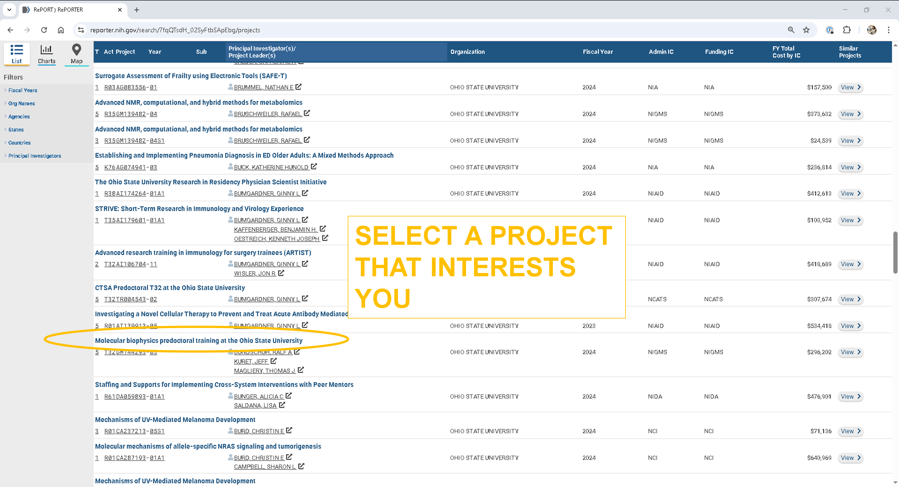
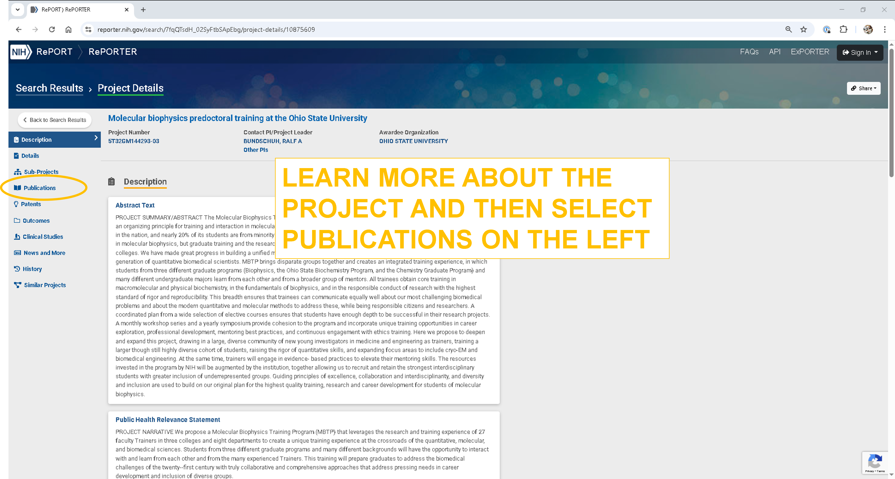

Lesson 4. iCite
The Relative Citation Ratio (RCR) evaluates the influence of a scientific article by analyzing its co-citation network. An RCR of 1.0 represents the median citation rate for articles in a given field. Values above 1.0 indicate that an article is cited more frequently than average, suggesting greater impact or influence. In this lesson, we’ll use the NIH Reporter to identify an active project at The Ohio State University with associated publications. We will then retrieve the RCR values for the publications using the iCite API.
Data skills | concepts
- Working with APIs
Learning objectives
- Locate API documentation and identify key components required to formulate an API request
- Parse the API response and store extracted data.
This tutorial is designed to support multi-session workshops hosted by The Ohio State University Libraries Research Commons. It assumes you already have a basic understanding of Python, including how to iterate through lists and dictionaries to extract data using a for loop. To learn basic Python concepts visit the Python - Mastering the Basics tutorial.
LESSON 4
The NIH Reporter is a database of NIH-funded research projects that provides information about grants, contracts, publications, patents, and other outcomes resulting from NIH funding.
Step 1: Locate an active NIH project
- Go to the NIH Reporter.
- Under Fiscal Year, select Active Projects.
- Under Organization, search for and select Ohio State University.

Step 2: Browse active projects
- As of May 6, 2025 there were 687 active projects at The Ohio State University.
- Browse the list and click on a project that interests you.

Step 3: Review project details
- Read the project abstract to understand its focus.
- To check for related publications:
- Click on Publications in the left-hand menu, or
- Scroll to the bottom of the project page.

Step 4: Export the publications
- If the publications are listed, use the Export option to download the list for further analysis.

import pandas as pd
df=pd.read_csv('data/Publications_10875609_6May2025_171210.csv') #Change the path to your downloaded file
Each article indexed in PubMed has a unique PMID (PubMed Identifier). The exported file includes a PMID column. Create a list of PMIDs found in the PMID column. To prepare the data:
- Remove any missing (null) PMIDs
- Convert each PMID from a float to integer, then to string.
import pandas as pd
df=pd.read_csv('data/Publications_10875609_6May2025_171210.csv')
pmid_list=df.PMID.dropna().tolist()
pmids=[]
for pmid in pmid_list:
pmids.append(str(int(pmid)))
pmidsScroll to the bottom and and review:
- Web Policies and Notices
- Bulk Data and APIs
On the Bulk Data and APIs page, locate the Python code example for querying the iCite API.
import requests
response = requests.get(
"/".join([
"https://icite.od.nih.gov/api",
"pubs",
"23456789",
]),
)
pub = response.json()
print(pub)Adjust the Python code example to extract the following fields for each PMID.
- pmid
- doi
- journal
- relative citation ratio
- cited by
- references
- title
- year
import pandas as pd
import requests
results=pd.DataFrame(columns=['pmid','doi','journal','rcr','cited_by','references','title','year'])
df=pd.read_csv('Publications_10875609_6May2025_171210.csv')
pmid_list=df.PMID.dropna().tolist()
pmids=[]
for pmid in pmid_list:
pmids.append(str(int(pmid)))
count=1
for each_pmid in pmids:
print(f"Starting record {count}: {each_pmid}")
response = requests.get(
"/".join([
"https://icite.od.nih.gov/api",
"pubs",
each_pmid,
]),
)
pub = response.json()
citing_pmids=pub['cited_by']
cited_by=[]
for each_citation in citing_pmids:
cited_by.append(str(each_citation))
reference_pmids=pub['references']
references=[]
for each_reference in references:
references.append(str(each_reference))
row = {
'pmid': pub['pmid'],
'doi': pub['doi'],
'journal': pub['journal'],
'rcr': pub['relative_citation_ratio'],
'cited_by': ','.join(cited_by),
'references': ','.join(references),
'title': pub['title'],
'year': pub['year']
}
each_row=pd.DataFrame(row, index=[0])
results=pd.concat([each_row, results], axis=0, ignore_index=True)
count += 1